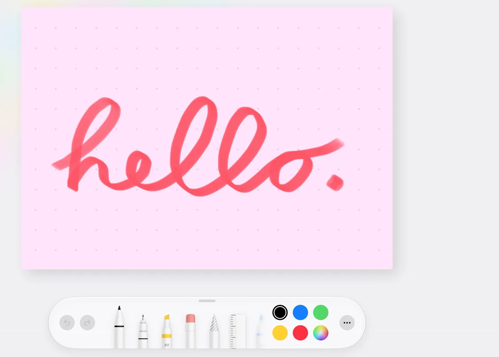
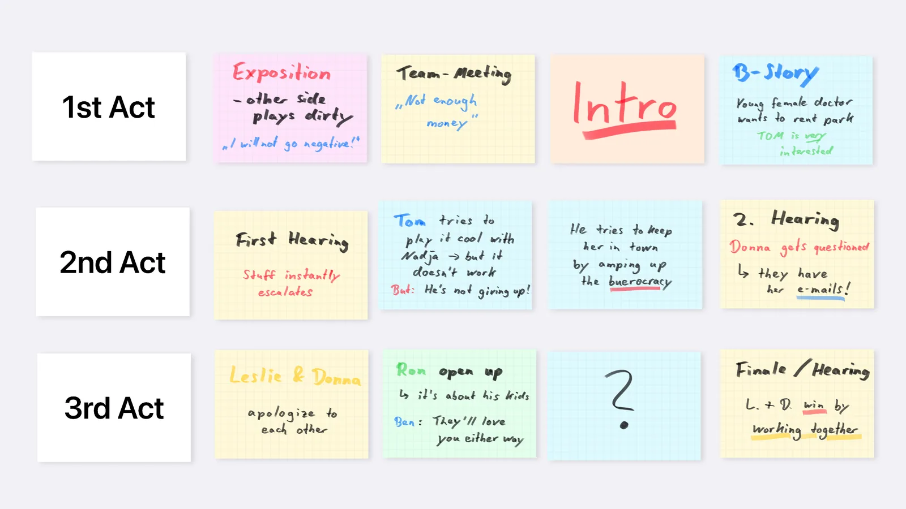
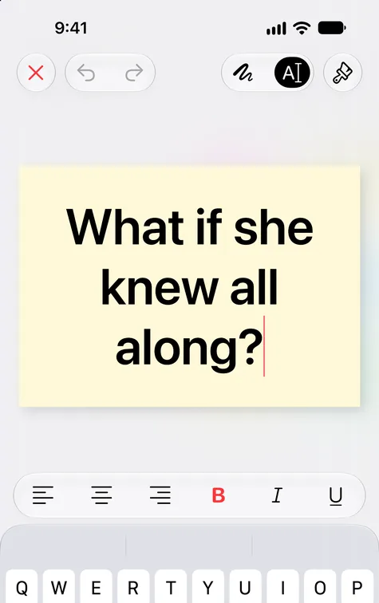
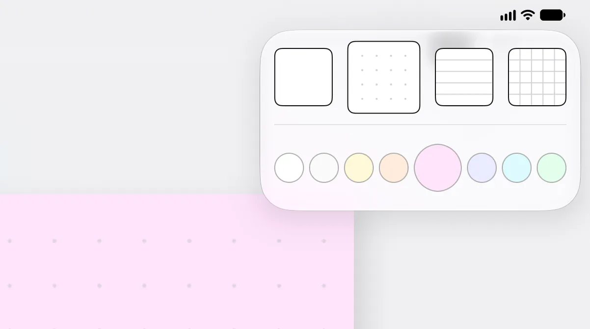
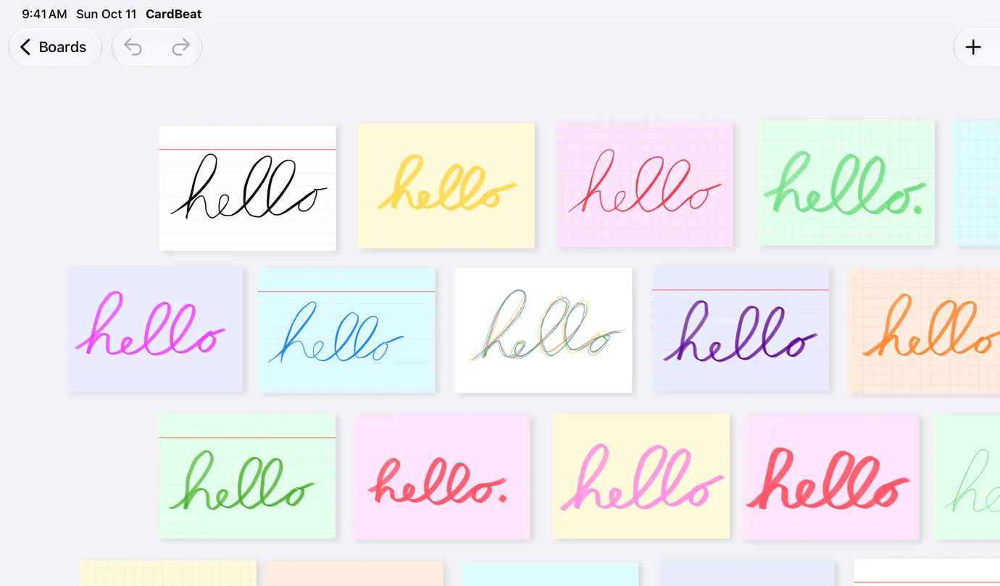

Per Hand schreiben
Mit dem Apple Pencil oder einfach mit dem Finger – mit Stiften, Bleistiften und Markern in jeder Farbe.
Die digitale Pinnwand fürs Drehbuchschreiben. Jede Szene auf eine Karte, umsortieren, bis die Struktur sitzt – und das ganze Board im Writers’ Room auf den Fernseher bringen. Für Romane genauso gut.



Schließ einen Fernseher, Monitor oder Beamer an: CardBeat zeigt dort das Board selbst – keinen Spiegel deines iPads. Keine Leisten, keine Menüs, nur deine Karten, passend für den großen Bildschirm. Du plottest auf dem iPad weiter, der ganze Raum schaut zu.
Teile deine Geschichte in Akte, Sequenzen und Szenen. Schreib jeden Beat auf eine Karte, pinne sie aufs Board und schieb sie hin und her, bis die Struktur sitzt – ohne Papier und Tinte zu verschwenden.

Mit dem Apple Pencil oder einfach mit dem Finger – mit Stiften, Bleistiften und Markern in jeder Farbe.

Lieber aufgeräumt? Jede Karte funktioniert auch mit der Tastatur, inklusive Fett, Kursiv und Ausrichtung.

Leere, linierte, gepunktete oder karierte Karten in acht Farben – für Figuren, Nebenhandlungen oder Zeitebenen.

Skizzieren, unterstreichen, einkreisen, an den Rand kritzeln – wie auf Papier, nur mit Rückgängig.
Was Papier nicht kann – und andere Apps nicht können.
Wirf beim Brainstormen Karten wild aufs Board. Wenn du die Struktur sehen willst, richtet „Aufräumen“ sie an einem gleichmäßigen Raster aus – ohne die Reihenfolge deiner Akte und Szenen durcheinanderzubringen.
Verschick das komplette Board als eine PDF-Seite, passend zu deinen Karten, mit jedem Kartentext genau wie auf dem Bildschirm. Oder exportiere eine CardBeat-Datei, die dein Co-Autor importiert und weiterbearbeitet.
Aufklappen und das ganze Board auf einem Bildschirm sehen – zuklappen und unterwegs weiterplotten.
“Jahrelang hat meine Freundin Reihen über Reihen von Haftnotizen an unseren Wänden ertragen. Diese App kann alles, was ich als Autor brauche – und achtet dabei auch noch auf Privatsphäre.”
“Ich war ernsthaft kurz davor, eine Pinnwand und einen Haufen Karteikarten zu kaufen – dann habe ich diese App entdeckt, und sie hat mich wirklich gerettet, denn für eine Pinnwand habe ich gar keinen Platz.”
“Sie ist sehr einfach, funktioniert aber wirklich perfekt und ist genau das, was ich brauche, um meine Geschichte zu plotten.”
Ausgewählte Auszüge aus Bewertungen im App Store. Dort bewerten können nur Personen, die CardBeat geladen haben. Alle Bewertungen lesen
Kein Abo. Probier CardBeat mit zwei vollwertigen Boards aus und schalte unbegrenzt viele Boards mit einem einmaligen Kauf frei.
Einmaliger Kauf. $19.99 in den USA; Preise je nach Land unterschiedlich.
Kein Konto, keine Werbung, keine Analyse-Tools von Drittanbietern. CardBeat sammelt keine Daten. Deine Geschichte bleibt auf deinen Geräten – und in deiner eigenen iCloud, wenn du das willst.
CardBeat ist eine digitale Pinnwand für iPhone und iPad. Du plottest Roman, Drehbuch oder Kurzgeschichte auf Karteikarten: eine Karte pro Szene oder Beat, in Akten und Sequenzen angeordnet und so oft umsortiert, wie du willst.
Ja, genau dafür ist CardBeat gemacht. Schreib jede Szene auf eine Karte, ordne die Karten nach Akten und verschiebe sie, bis die Struktur sitzt. Im Writers' Room zeigst du das Board auf einem Fernseher oder Beamer.
Ja. Nutze Karten für Kapitel, Szenen oder Wendepunkte und gib Erzählperspektiven, Nebenhandlungen oder Zeitebenen eigene Farben.
Nein. Du kannst mit dem Finger auf Karten schreiben oder mit der Bildschirm- oder einer externen Tastatur tippen. Der Apple Pencil funktioniert natürlich auch.
CardBeat ist mit zwei Boards kostenlos. Ein einmaliger In-App-Kauf schaltet unbegrenzt viele Boards frei: 19,99 € in der Eurozone und $19.99 in den USA; je nach Land unterschiedlich. Es gibt kein Abo.
Ja, über deinen eigenen iCloud-Account. In den Einstellungen kannst du die Synchronisierung abschalten und deine Boards nur auf einem Gerät behalten.
Ja. Exportiere ein Board als PDF für Feedback oder als CardBeat-Datei, die dein Co-Autor importieren und weiterbearbeiten kann. Gleichzeitiges Arbeiten am selben Board bietet CardBeat nicht.
Nein. CardBeat ist für die Struktur: Du findest die Form deiner Geschichte, bevor und während du schreibst. Die Seiten schreibst du in deiner Schreib-App, etwa Final Draft, Fade In, Highland, Papyrus Autor oder Scrivener.
Keine. CardBeat hat keine Konten, keine Werbung und keine Analyse-Tools von Drittanbietern. Deine Boards bleiben auf deinen Geräten und, wenn du willst, in deiner eigenen iCloud.
Auf iPhone und iPad mit iOS bzw. iPadOS 26 oder neuer, auch auf dem iPhone Duo.